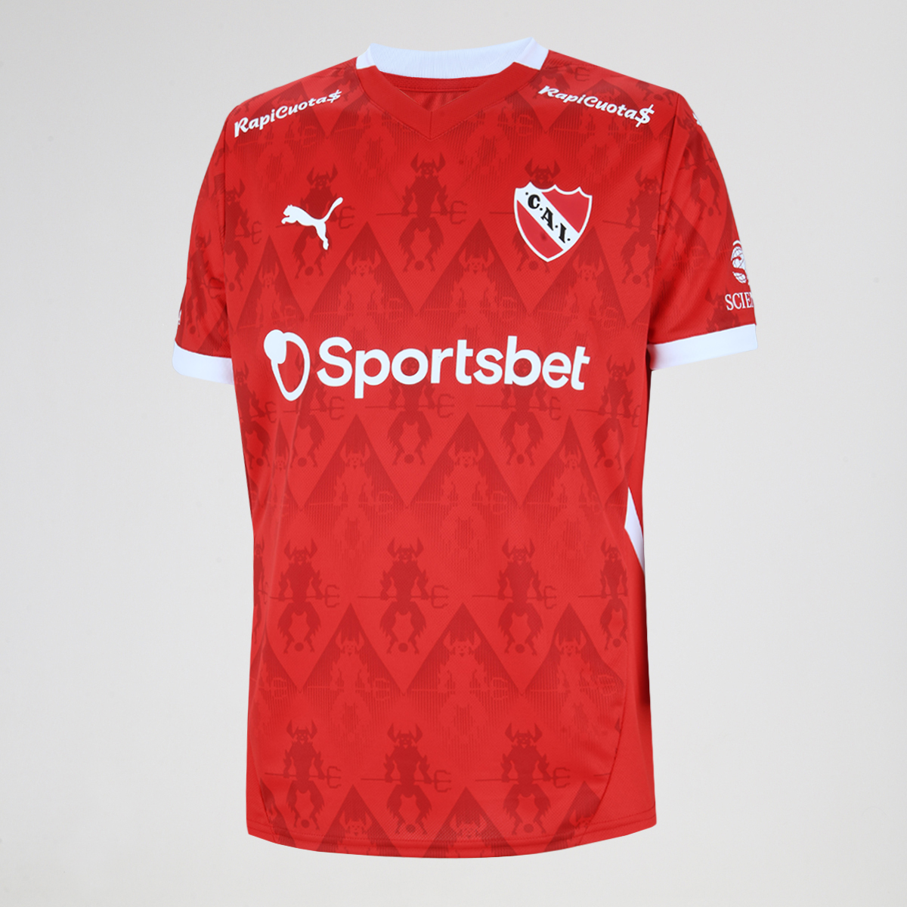
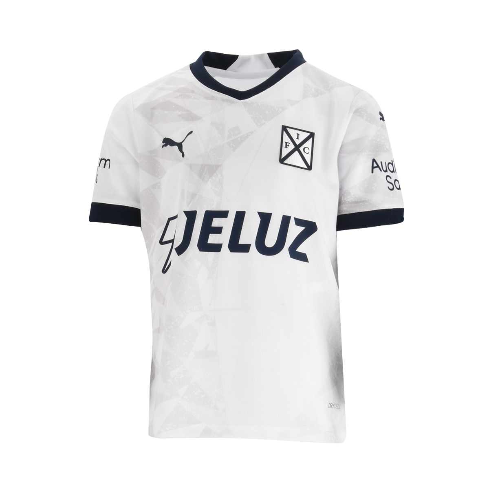
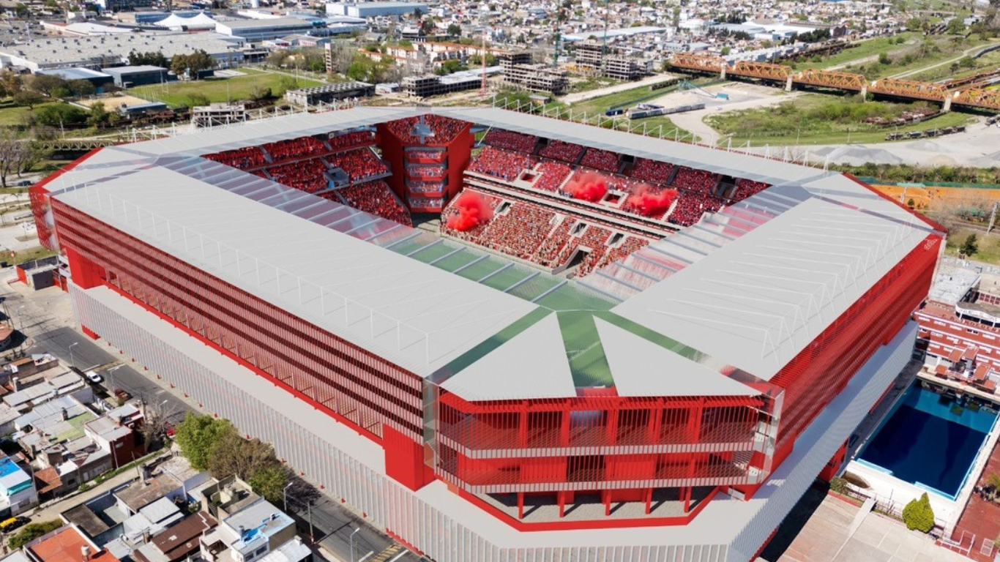

Fundación: 1905, Avellaneda.
Apodo: El Rojo, Rey de Copas.
Palmarés destacado:
7 Copas Libertadores (récord sudamericano)
2 Copas Interamericanas
2 Copas Intercontinentales
14 Ligas argentinas
Historia:
Independiente es reconocido mundialmente por su dominio en la Copa Libertadores durante los años 60 y 70.
Es el club con más títulos de este torneo, lo que le valió el apodo de "Rey de Copas". Tiene una histórica rivalidad con Racing, con quien disputa el clásico de Avellaneda.
PRÓXIMOS PARTIDOS
| Día |
L/V |
Vs Equipo |
Hora |
| 29/06 |
V |
Gimnasia (M) |
17:00 |
| 13/07 |
V |
Sarmiento |
14:00 |
| 20/07 |
L |
Talleres |
14:00 |
| 27/07 |
V |
Gimnasia |
14:00 |
| 10/08 |
L |
River |
14:00 |
PLANTEL
| Jugador |
Edad |
Nacimiento |
Altura |
| Julio César Vaccari (Entrenador) |
44 |
09/07/1980 |
|
| ARQUEROS |
| Joaquín Blázquez | 24 | 28/01/2001 | 1.93 |
| Manuel Tasso | 24 | 05/03/2001 | 1.83 |
| Rodrigo Rey | 34 | 08/03/1991 | 1.88 |
| DEFENSORES |
| Leonardo Godoy | 30 | 28/04/1995 | 1.73 |
| Adrián Sporle | 29 | 13/07/1995 | 1.86 |
| Federico Vera | 27 | 24/03/1998 | 1.78 |
| Nicolás Freire | 31 | 18/02/1994 | 1.87 |
| Santiago Montiel | 24 | 22/11/2000 | 1.66 |
| Kevin Lomónaco | 23 | 08/01/2002 | 1.92 |
| Franco Paredes | 26 | 18/03/1999 | 1.76 |
| Santiago Salle | 21 | 04/06/2004 | 1.85 |
| Sebastián Valdez | 29 | 06/11/1995 | 1.91 |
| Álvaro Angulo | 28 | 06/03/1997 | 1.77 |
| MEDIOCAMPISTAS |
| Felipe Loyola | 24 | 09/11/2000 | 1.80 |
| Pablo Galdames | 28 | 30/12/1996 | 1.76 |
| Luciano Cabral | 30 | 26/04/1995 | 1.70 |
| Federico Mancuello | 36 | 26/03/1989 | 1.78 |
| Rodrigo Fernández | 29 | 03/01/1996 | 1.72 |
| David Martínez | 21 | 14/06/2004 | 1.70 |
| Iván Marcone | 35 | 03/06/1990 | 1.82 |
| Matías Giménez | 26 | 06/03/1999 | 1.85 |
| DELANTEROS |
| Walter Mazzantti | 28 | 05/09/1996 | 1.73 |
| Gabriel Ávalos | 34 | 12/10/1990 | 1.85 |
| Lautaro Millán | 19 | 16/08/2005 | 1.69 |
| Santiago Hidalgo | 20 | 17/02/2005 | 1.71 |
| Ignacio Puch | 21 | 13/08/2003 | 1.80 |
| Lucas Román | 21 | 10/02/2004 | 1.60 |
| Diego Tarzia | 22 | 26/04/2003 | 1.75 |


